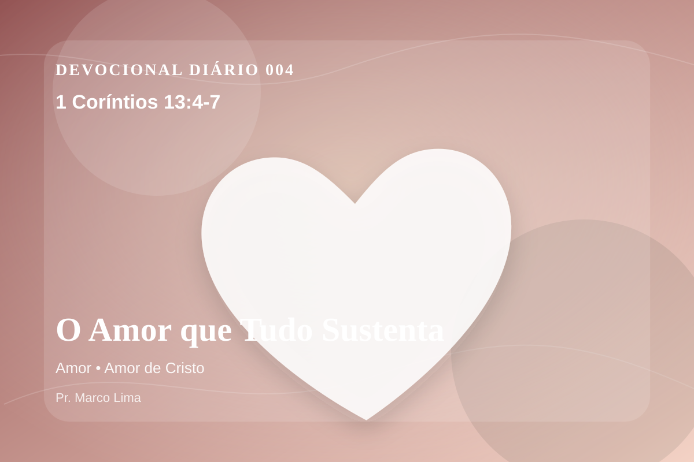

O Amor que Tudo Sustenta
O amor é sofredor, é benigno; o amor não é invejoso; o amor não trata com leviandade, não se ensoberbece, não se porta com indecência, não busca os seus interesses, não se irrita facilmente, não guarda rancor; não se alegra com a injustiça, mas se alegra com a verdade; tudo sofre, tudo crê, tudo espera, tudo suporta.
Pensamento
1 Coríntios 13:4-7 coloca diante de nós uma verdade capaz de atravessar a rotina, confrontar o coração e renovar a esperança em Deus.
O amor descrito por Paulo confronta a imaturidade da igreja. Ele não é sentimento solto, mas expressão do caráter de Cristo: paciente, humilde, verdadeiro e disposto a permanecer quando o ego quer dominar.
O tema de amor precisa ser recebido com simplicidade e seriedade. O Senhor não usa esta passagem para alimentar vaidade espiritual, mas para formar obediência sincera. O amor bíblico não é apenas afeto, mas decisão santa que reflete o caráter de Deus. Ele aparece nas Escrituras como entrega, paciência, serviço e fidelidade, tendo em Cristo sua expressão mais perfeita.
Não transforme este devocional em informação religiosa. Pare por alguns instantes, nomeie diante de Deus aquilo que precisa mudar e peça um coração pronto para obedecer.
Arrependimento não é apenas sentir peso na consciência; é voltar-se para Deus, abandonar o caminho que entristece o Senhor e confiar que a graça de Cristo é suficiente para perdoar e transformar.
Este é o evangelho que sustenta toda aplicação: Jesus Cristo morreu pelos pecadores, ressuscitou em vitória e chama cada pessoa a responder com fé, arrependimento e uma vida rendida ao Seu senhorio.
O simples evangelho de Cristo Jesus continua sendo suficiente: arrependa-se, creia, receba perdão e caminhe em obediência pelo poder do Espírito Santo.
Não espere sentir tudo para obedecer. Comece com fidelidade no próximo passo, confiando que Deus sustenta quem responde à Sua voz.
Para Praticar Hoje
- Leia 1 Coríntios 13:4-7 lentamente e destaque uma palavra ou expressão central do texto.
- Confesse a Deus um pecado, resistência ou frieza espiritual que esta Palavra revelou.
- Declare sua fé em Jesus Cristo e pratique hoje uma atitude concreta de arrependimento e obediência.
Oração
Senhor, onde há mágoa que impede de amar, sara. Onde há ressentimento, liberta. 1 Coríntios 13:4-7 me ensina que o amor de Deus foi derramado em nosso coração. Que eu ame como Cristo amou: com entrega total.
{kind=link}